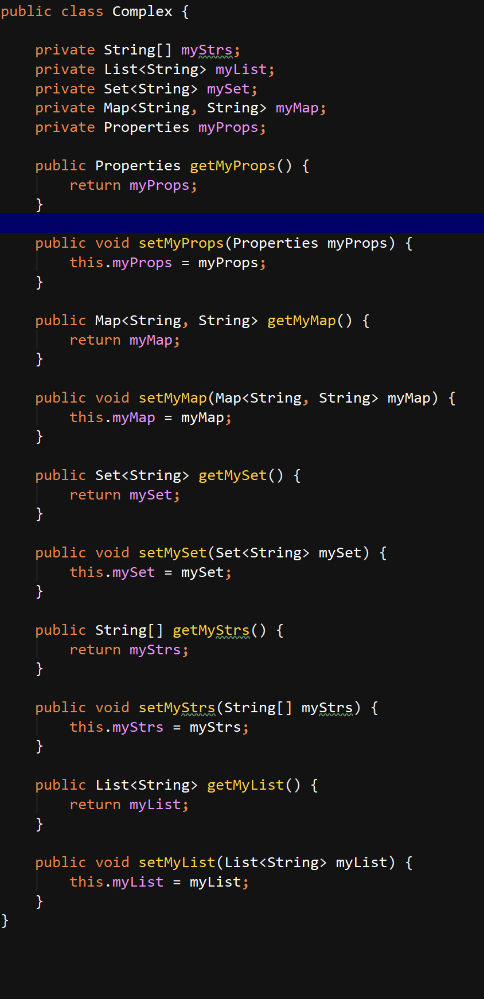
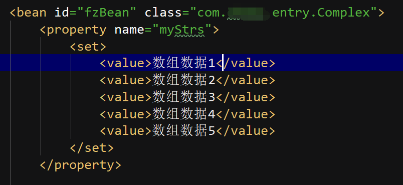
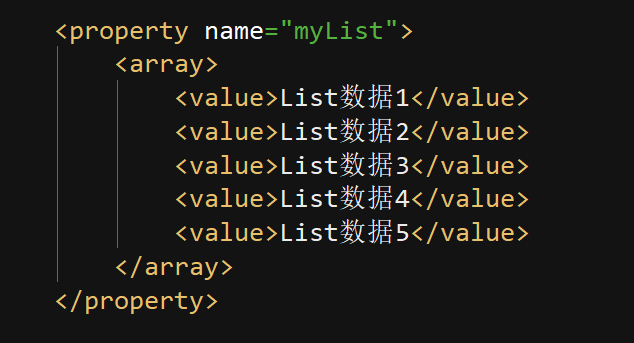
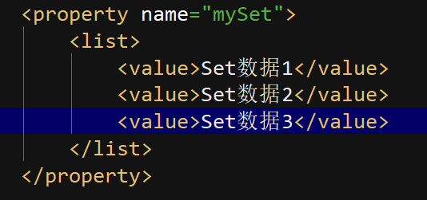
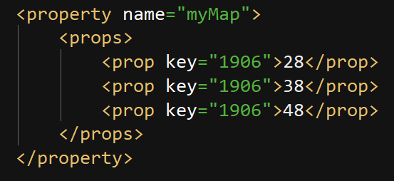
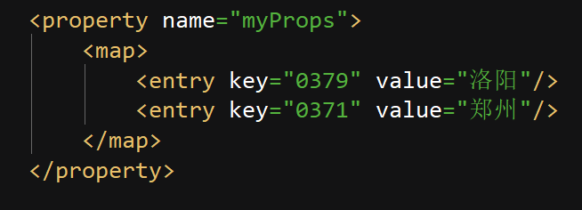

spring框架是javaWeb项目中至关重要的一个框架，大多web 项目在工作层次上分为持久层、服务层、控制层。持久层(dao、mapper)用于连接数据库，完成项目与数据库中数据的传递；服务层(service)主要完成项目中各种业务(增、删、改、查)，连接持久层、控制层，还和各种实体类打交道，而控制层主要和web前端页面打交道，与页面传递数据。今天，主要介绍服务层的框架spring，也是各种整合框架最核心的框架。主要介绍spring中的一个小知识点，很难记的，那就是在spring框架对实体进行DI(注入)，也就是赋值时，实体类中复杂数据类型，比如数组、map集合、set集合、properties、List 的注入方法。
首先创建一个实体类， setter、getter方法走一波

该实体类中定义了各种类型的属性

此处在你的配置文件xml中写bean标签，id为唯一标识，使用时要通过id来使用，class为实体类的路径，通过属性标签property中的name选中实体类中属性名称，此处通过get方法拿到的
数组通过set中多个value属性设置数组值

这是List类型数据的注入，List为 array 标签，value为值

Set数据注入，list标签

Map类型数据注入，props标签

Properties类型数据注入，map 标签
以上就是这些复杂类型的注入方式，可以看到，这几个数据类型的标签是相互乱套的， 也不知道谁发明的这个东西，这玩意没人去记，如果用到的时候直接查就行了。
如果此篇文章能跟您带来帮助，那就太荣幸了，这是本人第一篇贴子，以后会在学习中记录下自己的一些问题和解决方法，欢迎大家互相学习，互相交流。